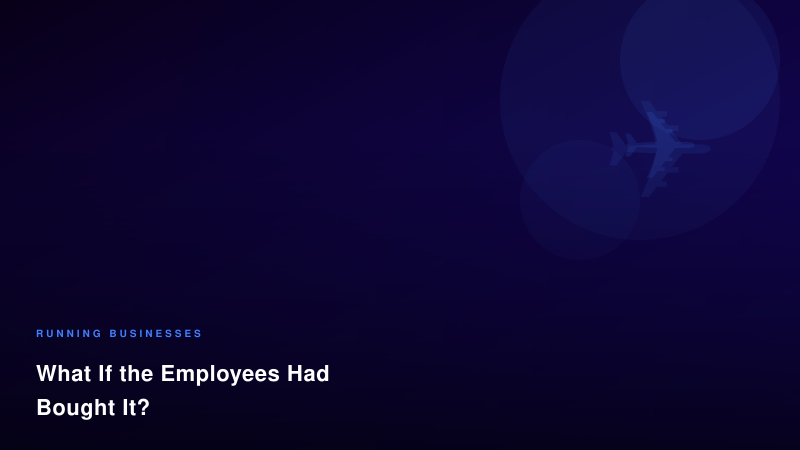

Spirit Airlines is gone. The government couldn't save it. Wall Street wouldn't. But 17,000 workers had something nobody talked about — and it might have been enough.

When Spirit Airlines filed for Chapter 7 and ceased operations, the conversation that followed was entirely predictable: stock analysts blamed the business model, politicians debated bailout failures, and the media ran the usual post-mortem on budget aviation. Nobody asked the one question that actually matters about the workers who showed up every day and kept that airline flying.
What if the employees had bought it?
Spirit Airlines employed approximately 17,000 people. In the months before collapse, fuel costs doubled — jet fuel went from $2.24 to $4.60 per gallon following a geopolitical conflict in a major oil-producing region. That shock, combined with legacy debt from pandemic-era borrowing, made the airline unsustainable at current capital levels.
The government had floated a rescue package. Wall Street declined to restructure. But here's what nobody modeled:
That's $390–500M — the same ballpark as the rejected government offer. And it comes with something no bailout ever includes: aligned incentives.
"Ownership changes behavior — because it changes the relationship between labor and outcome."
Employee Stock Ownership Plans (ESOPs) are not a radical idea. Over 6,500 U.S. companies are currently employee-owned, representing more than 14 million workers. These companies, on average, outperform conventional competitors in productivity, retention, and long-term stability. The reason isn't complicated: when you own a piece of what you build, you treat it differently.
An employee-owned Spirit would have had immediate structural advantages:
Would it have worked? Probably not — at least not in the timeline Spirit faced. The collapse came too quickly. The debt load was too heavy. And our culture has no infrastructure for workers to execute this kind of acquisition in crisis conditions. We don't have the legal frameworks, the financial pipelines, or the cultural expectation that workers are legitimate buyers of the enterprises they build.
That's precisely the point.
The Spirit Airlines question isn't really about Spirit Airlines. It's about the thousands of businesses that will face similar crises in the next decade — climate disruption, AI displacement, supply chain shocks, geopolitical realignment. Every one of those crises will present the same choice: let creditors extract value, ask governments to subsidize failure, or build ownership infrastructure before crisis arrives.
You don't need to be an airline for this thinking to apply. Every small business owner builds something that employs people, serves a community, and creates value that disappears when the owner exits without a plan. The ESOP model, worker cooperatives, and community investment vehicles all exist. Most small business owners have never heard of them.
At Moor Graphix, we talk about Cultural Alchemy as extracting the hidden gold inside your heritage and forging it into equity. The same principle applies to businesses: the value you've built belongs, in some meaningful sense, to the people who helped you build it. The question is whether you structure for that truth — or let it evaporate when the next crisis arrives.
Spirit Airlines is gone. Its workers are already scattered. But 17,000 people had a story, a skill set, and a shared stake in keeping their airline flying. Nobody asked them if they wanted to buy it.
We should have.